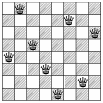

I guess the n-queen problem is known by every person who has studied backtracking. In this problem you should count the number of placement of n queens on an n*n board so that no two queens attack each other. To make the problem a little bit harder (easier?), there are some bad squares where queens cannot be placed. Please keep in mind that bad squares cannot be used to block queens' attack.

Even if two solutions become the same after some rotations and reflections, they are regarded as different. So there are exactly 92 solutions to the traditional 8-queen problem.
8 ........ ........ ........ ........ ........ ........ ........ ........ 4 .*.. .... .... .... 0
Case 1: 92 Case 2: 1